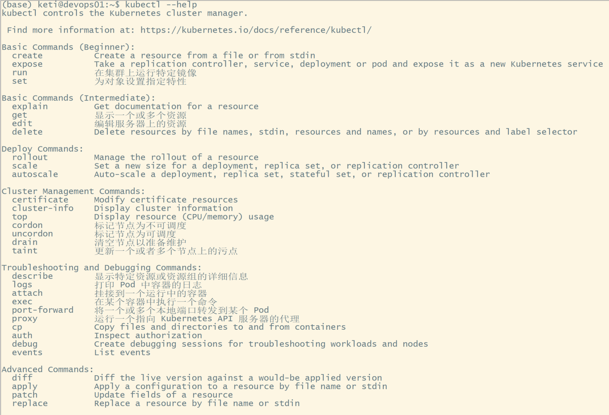
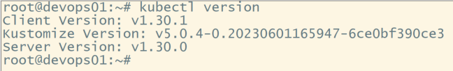
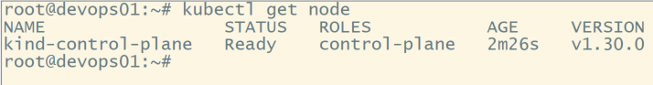
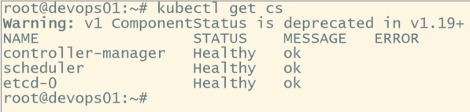
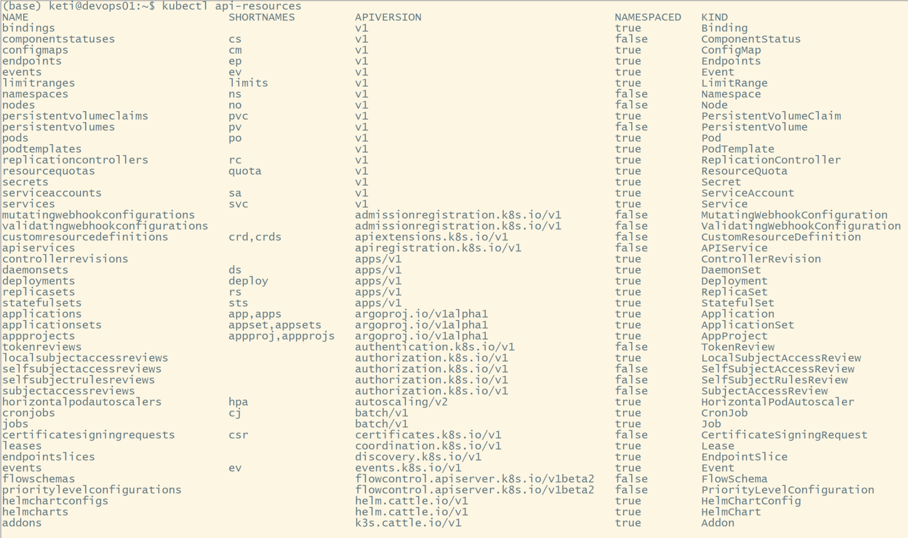
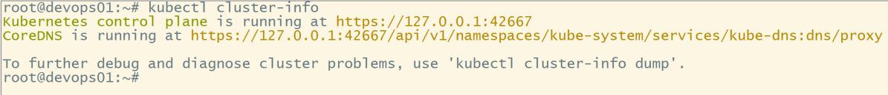
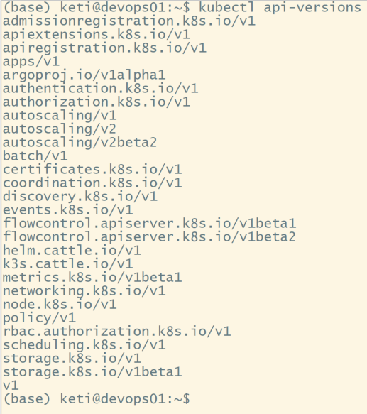
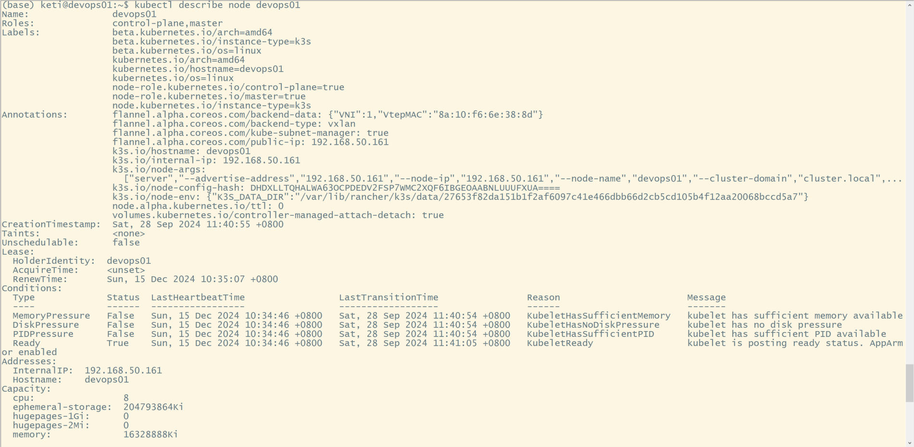

kubectl 命令详解
kubectl是官方的CLI命令行工具，用于与 apiserver进行通信，将用户在命令行输入的命令，组织并转化为 apiserver能识别的信息，进而实现管理k8s各种资源的一种有效途径。
帮助

查看版本信息

查看资源对象
查看Node状态

查看Master组件状态

列出K8s所有资源

查看集群接口信息

查看API的版本

查看某个node的详细信息

Kubectl 以 json 格式输出
# 查看镜像
kubectl get daemonset node-exporter -n monitor -ojsonpath='{.spec.template.spec.containers[*].image}'
kubectl get pod -l app=pas-topod -o jsonpath='{.items[0].metadata.name}'
kubectl 自动补全
yum -y install bash-completion
source /usr/share/bash-completion/bash_completion
echo "source <(kubectl completion bash)" >> ~/.bashrc
查看某个api下面都有哪些配置
kubectl explain <资源名对象名>
例如查看pod
$ kubectl explain pod
KIND: Pod
VERSION: v1
DESCRIPTION:
Pod is a collection of containers that can run on a host. This resource is
created by clients and scheduled onto hosts.
FIELDS:
apiVersion <string>
APIVersion defines the versioned schema of this representation of an
object. Servers should convert recognized schemas to the latest internal
value, and may reject unrecognized values. More info:
https://git.k8s.io/community/contributors/devel/api-conventions.md#resources
kind <string>
Kind is a string value representing the REST resource this object
represents. Servers may infer this from the endpoint the client submits
requests to. Cannot be updated. In CamelCase. More info:
https://git.k8s.io/community/contributors/devel/api-conventions.md#types-kinds
metadata <Object>
Standard object's metadata. More info:
https://git.k8s.io/community/contributors/devel/api-conventions.md#metadata
spec <Object>
Specification of the desired behavior of the pod. More info:
https://git.k8s.io/community/contributors/devel/api-conventions.md#spec-and-status
status <Object>
Most recently observed status of the pod. This data may not be up to date.
Populated by the system. Read-only. More info:
https://git.k8s.io/community/contributors/devel/api-conventions.md#spec-and-status
列出所有 api 字段
通过以上我们能感觉到,以上好像并没有罗列出所有的api字段,实际上以上列出的仅是一级字段,一级字段可能还包含二级的,三级的字段,想要罗列出所有的字段,可以加上--recursive来列出所有可能的字段
$ kubectl explain svc --recursive
KIND: Service
VERSION: v1
DESCRIPTION:
Service is a named abstraction of software service (for example, mysql)
consisting of local port (for example 3306) that the proxy listens on, and
the selector that determines which pods will answer requests sent through
the proxy.
FIELDS:
apiVersion <string>
kind <string>
metadata <Object>
annotations <map[string]string>
clusterName <string>
creationTimestamp <string>
deletionGracePeriodSeconds <integer>
deletionTimestamp <string>
finalizers <[]string>
generateName <string>
generation <integer>
initializers <Object>
pending <[]Object>
name <string>
result <Object>
apiVersion <string>
code <integer>
details <Object>
causes <[]Object>
field <string>
message <string>
reason <string>
group <string>
kind <string>
name <string>
retryAfterSeconds <integer>
uid <string>
kind <string>
message <string>
metadata <Object>
continue <string>
resourceVersion <string>
selfLink <string>
reason <string>
status <string>
labels <map[string]string>
name <string>
namespace <string>
ownerReferences <[]Object>
apiVersion <string>
blockOwnerDeletion <boolean>
controller <boolean>
kind <string>
name <string>
uid <string>
resourceVersion <string>
selfLink <string>
uid <string>
spec <Object>
clusterIP <string>
externalIPs <[]string>
externalName <string>
externalTrafficPolicy <string>
healthCheckNodePort <integer>
loadBalancerIP <string>
loadBalancerSourceRanges <[]string>
ports <[]Object>
name <string>
nodePort <integer>
port <integer>
protocol <string>
targetPort <string>
publishNotReadyAddresses <boolean>
selector <map[string]string>
sessionAffinity <string>
sessionAffinityConfig <Object>
clientIP <Object>
timeoutSeconds <integer>
type <string>
status <Object>
loadBalancer <Object>
ingress <[]Object>
hostname <string>
ip <string>
问题
使用kubectl get pv 命令报错
The connection to the server localhost:8080 was refused - did you specify the right host or port?
解决方法：查看~/.kube 文件夹下是否有config文件，参考安装过程复制config文件
Kubectl 日志
kubectl有一个log的开关，打开之后既可以看到具体问题在哪里了。
-v, --v=0: number for the log level verbosity
kubectl -v=8 get pods
在客户端电脑安装 kubectl
Windows
-
从下面的链接下载 kubectl 可执行文件https://storage.googleapis.com/kubernetes-release/release/v1.25.0/bin/windows/amd64/kubectl.exe
- 请将其中的 v1.25.0 替换为集群安装的版本号
kubectl version --short
- 通过此链接可获取最新的版本号 https://storage.googleapis.com/kubernetes-release/release/stable.txt
- 将下载的可执行文件添加到 PATH 环境变量
- 执行命令查看已安装的 kubectl 版本号
kubectl version
Linux
配置K8S的yum源
cat <<EOF > /etc/yum.repos.d/kubernetes.repo
[kubernetes]
name=Kubernetes
baseurl=http://mirrors.aliyun.com/kubernetes/yum/repos/kubernetes-el7-x86_64
enabled=1
gpgcheck=0
repo_gpgcheck=0
gpgkey=http://mirrors.aliyun.com/kubernetes/yum/doc/yum-key.gpg
<http://mirrors.aliyun.com/kubernetes/yum/doc/rpm-package-key.gpg>
EOF
安装kubectl
yum install -y kubectl
验证安装
kubectl version
配置 kubectl 客户端
在客户端电脑完成如下配置，即可远程管理 Kubernetes 集群
Windows
执行命令
用记事本（或其他文本编辑器）创建文件 ~/.kube/config，其中 ~ 代表当前的用户目录
将前面获得的 /etc/kubernetes/admin.conf 文件的内容粘贴进该文件并保存
配置 hosts
用记事本打开 C:\windows\System32\drivers\etc\hosts 文件（需要管理员权限），在该文件末尾添加一行记录：
x.x.x.x apiserver.demo
将 x.x.x.x 替换成 demo-master-a-1 的实际 IP 地址将 apiserver.demo 替换成前面获得 /etc/kubernetes/admin.conf 文件中 clusters/cluster/server 中 URL 里 host 对应的部分
验证安装结果
执行命令
kubectl get nodes
kubectl get pods -n kube-system
Linux
执行命令
vi ~/.kube/config
将前面获得的 /etc/kubernetes/admin.conf 文件的内容粘贴进该文件并保存
配置 hosts
echo "x.x.x.x apiserver.demo" >> /etc/hosts
将 x.x.x.x 替换成 demo-master-a-1 的实际 IP 地址将 apiserver.demo 替换成前面获得 /etc/kubernetes/admin.conf 文件中 clusters/cluster/server 中 URL 里 host 对应的部分
验证安装结果
执行命令
kubectl get nodes
kubectl get pods -n kube-system
Kubectl 看到 Pod 的 Lsat State 的 Exit Code 是 137
137 表示该进程由外部信号终止。数字 137 是 128 + x 的和其中 x 是终止进程的信号的编号。137 中 x 为 9，这是 SIGKILL 的信号编号，意味着这个进程被强行终止。在底部的 Event 中显示了容器为什么终止。
kubectl 命令 带 -- 是什么意思？
在 kubectl 命令中，双破折号（--）有特定的含义。
-
区分选项和非选项参数
* 当你使用 kubectl 命令时，有些参数是选项（通常用于设置命令的行为，如 -n/--namespace 用于指定命名空间），而有些参数是非选项参数（如资源名称等）。双破折号用于明确区分选项和非选项参数的结束。
* 例如，kubectl get pods --namespace=dev -- my -pod。在这个命令中，-- 表示前面是选项（--namespace=dev），后面的是非选项参数（my -pod）。如果不加 --，kubectl 可能会把 my -pod 中的部分内容当作选项来解析，可能会导致错误。
-
传递参数给资源
* 在某些情况下，你可以通过双破折号将参数传递给资源执行的操作。比如，当你使用 kubectl exec 命令在容器中执行命令时，可以这样使用。
* 例如，kubectl exec my -pod -- ls -1。这里，-- 后面的 ls -1 是传递给容器中执行的操作（即在容器中执行 ls -1 命令来列出目录内容）。
-
避免参数冲突
* 如果资源的名称等非选项参数看起来像选项，使用双破折号可以避免这种冲突。例如，如果你有一个名为 -pod -name 的资源，kubectl get pods -pod -name 可能会被错误地解析为选项。在这种情况下，kubectl get pods -- -pod -name 就可以正确地获取名为 -pod -name 的 Pod 资源。